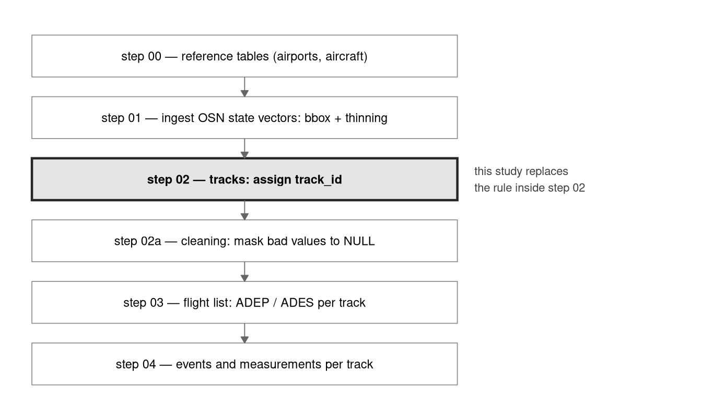
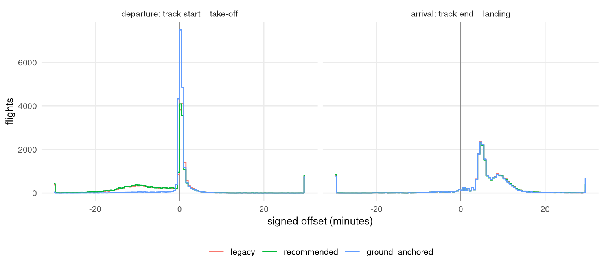

Turning ADS-B state vectors into flight tracks
Version 1 — what the segmentation is worth, and what had to change downstream before a better one could ship
Summary
The rule that built every track_id OPDI published up to v0.0.2 recovers about half the flights it should, the cause is one column in a grouping key rather than a mistuned threshold, and a rule that fixes it has now shipped. That is the whole finding. The rest of this page is how it was established, and what had to be repaired in the flight list before the better rule could be adopted without making the published product worse.
Before OPDI can derive a flight list it has to decide which state vectors belong to the same flight. That decision — segmentation — is made once, and everything downstream inherits it: the flight list groups by track_id, events are extracted per track, measurements accumulate from a track’s start. This page asks what the decision is worth, in four parts.
The old rule recovers about half the flights it should. On a three-day sample of 89,609 Network Manager flights it matches 49.64% of them one-to-one, meaning one flight, one track, that track holding nothing else; 49.95% of flights are split across more than one track. The failure is almost entirely that splitting, and almost never the opposite error of running two flights together.
Its parameters are not the problem. Its three thresholds were swept over 262 combinations, every axis widened until the curve turned over inside the grid rather than at its edge. The whole grid spans 0.95 points of one-to-one matching, and on the full three-day samples the best combination beats the production setting by only +0.34 points on 2025 and +0.54 on 2024. The rule was already at, or a fraction of a point from, the best setting anyone could have picked for it.
The identity key is the problem. The old group key is (icao24, callsign), so a state vector decoded without a callsign forms a group — and therefore a track — of its own. Grouping on the airframe alone, and splitting only when the callsign genuinely changes, takes one-to-one matching to 90.80% on 2025 and 91.75% on 2024: a gain of +41.15 points, about 119 times everything the parameter sweep had to offer. This is the rule that now ships, as segmentation.method = "standard".
The flight list could not consume it until one aggregate was fixed, and that is the most useful finding here. flights.py labelled each flight with the lexicographically smallest callsign in its track, and a blank sorts first. That is harmless only while every track carries exactly one callsign — a property the old group key supplied by accident, and which any fix to the fragmentation necessarily destroys. Measured against the pipeline as it then stood, the better segmentation therefore made the published product worse: not by predicting wrong aerodromes, but by producing flights that could no longer be identified at all. That labelling is now fixed in production, and the numbers on this page are the fixed ones.
With it fixed, the better segmentation costs 731 ADEP/ADES points on 2025 and 817 on 2024 — 0.54% and 0.63% of the total, where a point is the flight list’s own score for one correctly named aerodrome and a wrong one costs two — while recovering 41 points more flights. The residual is not accuracy, which is unchanged, and it is not departures, where the new rule is slightly ahead. It is arrival coverage, and the one failure mode the new rule makes worse is merging.
1 How to read this page
Sections are ordered as the work was done, not as the conclusion would suggest, because two of the results only make sense as answers to questions asked in order.
What a track is defines the object and says why the question was open. What has already happened to a sample is a map of the pipeline steps that run before any segmentation sees a state vector; skip it if you already know them. How a segmentation is scored matters more than usual here, because the obvious scoring choice is misleading and this page says why before using something else; it also defines every term the later sections use. The sample says what ground truth is and where it comes from. The ladder is one subsection per candidate rule, each with what it changes, what it is trying to fix, the rule itself in enough detail to reimplement, and what it scored. The sweep asks whether the old rule was merely mistuned, and answers no. The payoff measures the downstream effect on ADEP/ADES and explains why it does not track segmentation quality. What shipped states what was adopted and what consumers have to know about it.
Every number on this page is read from a committed CSV, regenerated by the entrypoint the page runs before drawing anything; Provenance lists the files one by one. Limitations is where the claims this page does not make are written down.
2 What a track is, and why the question was open
This section defines the object under study and the three ways a rule for building it can fail. By the end of it you will know what the rule under test was, and what “better” is going to mean.
OPDI ingests OpenSky state vectors — position reports, one aircraft at a time, with no notion of a flight. A track is the pipeline’s answer to “which of these belong together”, and it is the unit everything downstream is built on: the flight list groups by track_id, events are extracted per track, and measurements accumulate from a track’s start. The procedure that produces tracks is called a segmentation, and a track identifier (track_id) is what it stamps on every sample it decides belongs to the same flight.
The rule this study set out to evaluate — called legacy throughout, and the rule behind every dataset OPDI published up to v0.0.2 — is short. Group the samples by (icao24, callsign), order them by time, and start a new track when the gap to the previous sample exceeds 30 minutes, or exceeds 15 minutes while the aircraft is below 5,000 ft. The resulting identifier carries a _{year}_{month} suffix.
Three things can go wrong with such a rule, and they are not symmetric:
- Fragmentation — one real flight becomes several tracks. Everything downstream sees several short flights where there was one.
- Merging — several real flights become one track. The flight list emits one flight and the others simply do not exist in the output.
- Boundary error — the track is one flight, but starts or ends in the wrong place, so first- and last-seen events and cumulative measurements are wrong.
Of the three, merging is the most damaging, because a merged flight is unrecoverable downstream, while a fragmented one is at least present in pieces and a boundary error leaves the flight intact. The metrics below are chosen so that merging and fragmentation cannot be confused with each other, and the candidate rules are compared on both rather than on a single blended score.
Until this study, the rule had never been benchmarked, and that is why the study exists.
What it is not is frozen. Segmentation is a versioned choice: a release states which rule built its track_id values, and changing that rule changes track_id for everything produced from that release forward — in value, and in shape where the month suffix goes. That is a release decision, to be documented and communicated to consumers rather than avoided, and it is a decision that has now been taken. As of this release segmentation.method defaults to "standard", which is the rule this study recommends. "legacy" remains selectable and reproduces the identifiers of every dataset published up to OPDI v0.0.2, so released data stays reproducible.
One consequence for the reader, stated here so nothing later depends on inferring it. This paper measures algorithms, not the pipeline. Every rule below is expressed in a generic segmentation engine and scored in a harness, so that eight candidates could be compared without eight production pipeline runs — which at this data volume is the difference between a study and a quarter. That is a legitimate design and it is also a real limitation: what is measured here is a re-implementation of each rule, not the pipeline’s own output. Version 2 of this study is the paper that runs the pipeline itself, end to end, on the rule this one recommends. If you want to know what a rule is worth, you are in the right place; if you want to know what the pipeline now produces, read version 2.
3 What has already happened to a sample
Side information. This section says what the /opdi pipeline has already done to a state vector before any segmentation sees it, so that nothing later in this page is a surprise. If you know the pipeline steps, skip to the metrics.
Segmentation is step 02 of a chain, and the samples reaching it are not raw OpenSky rows. Two earlier decisions in particular shape everything measured on this page: the ingestion filter decides which samples exist at all, and the thinning rule — which sample survives out of each short interval — decides how densely a flight is described.
| Step | What it does | Writes |
|---|---|---|
| 00 | Builds reference tables: H3 airport detection zones, HexAero airport ground layouts, OurAirports, the OpenSky aircraft database. Read later; never rewritten by a pipeline run. | reference tables |
| 01 | Downloads OpenSky state vectors, restricts them to the OPDI bounding box, and thins them to one sample per aircraft per interval. | osn_statevectors |
| 02 | Groups samples into tracks and stamps track_id. This is the step under study. Also attaches the H3 index each later join uses. |
osn_tracks |
| 02a | Masks values that cannot be right — duplicates, out-of-range positions, stale broadcasts, derivative spikes, isolated points — to NULL, keeping the row. Writes a second table rather than editing the first. | osn_tracks_clean |
| 03 | One flight per track_id: departure and destination aerodrome, and the flight’s callsign label. |
opdi_flight_list |
| 04 | Milestones per track — take-off, top-of-climb, level segments, landing — and the measurements attached to them. | events, measurements |
Two parameters of step 01 are worth naming, because every count on this page is conditioned on them.
| Parameter | Value | Why it matters here |
|---|---|---|
| bounding box (min lon, min lat, max lon, max lat) | (-25.86653, 26.74617, 49.65699, 70.25976) | A flight is observed only inside this box. A track that begins at its edge may have entered from outside, which is why an out-of-area label exists at all. |
| thinning interval | 5 s | Consecutive samples of one aircraft are at least this far apart, so every gap threshold in this study is measured against a 5 s grid rather than a 1 Hz one. |
| thinning rule | bucket |
One row kept per aircraft per interval bin — the last, so a track’s final observation survives exactly. The earlier modulo rule kept the row whose epoch second divides the interval, and built every dataset published before it. |
One ordering detail matters, because the diagram would otherwise mislead. In production, step 02 builds tracks and step 02a cleans them, in that order. This study runs the other way round: every candidate rule is applied to the cleaned table, so that all of them see exactly the same input and a difference between two of them cannot be an artefact of different cleaning.
That is the right choice for a comparison and it has one consequence worth knowing. Cleaning masks bad values to NULL rather than deleting rows, and NULL < 5000 evaluates to NULL rather than to true — so legacy’s low-altitude split does not fire on a sample whose altitude the cleaner rejected, where it once did. Every arm is subject to that equally, so no comparison here is affected; but it means the identifiers in published data cannot be recomputed from the published clean table. That is picked up again in Limitations.
4 How a segmentation is scored
This section defines every measurement used later: the two failure measures, the headline statistic, the rule that decides which track belongs to which flight, and the sign convention for boundary error. Nothing after this section introduces a metric.
Comparing a segmentation against ground truth is a clustering comparison: both the algorithm and the truth partition the same state vectors — the algorithm into tracks, the truth into flights — and the question is how far the two partitions agree.
4.1 Homogeneity is merging; completeness is fragmentation
Two standard clustering measures map onto the two failure modes exactly, which is why they are used here rather than a score invented for the occasion:
- Homogeneity asks whether each track contains samples from only one flight. It falls when a track holds more than one flight — so it is the merging measure.
- Completeness asks whether each flight’s samples all landed in one track. It falls when a flight is spread over several tracks — so it is the fragmentation measure.
Both are entropy-based and both run from 0 to 1, with 1 meaning perfect agreement with ground truth on that axis alone.
V-measure is their harmonic mean — a single number summarising both. It is reported below and used to choose nothing, and the reason is measured rather than assumed. Across the eight candidate rules V-measure spans 0.9959 to 0.9977, a range of 0.0018, while the one-to-one matching rate defined next spans 37.5 to 91.8 points. Worse than insensitive, it is misleading: it ranks the candidates in a different order at the top, which is the only place a comparison ever looks. The cause is that both statistics are entropy-weighted over every sample in the period, and the overwhelming majority of samples sit in tracks that every candidate gets right — so V-measure is dominated by agreement that carries no information about where the candidates differ.
4.2 The headline: one-to-one matching
The headline statistic on this page is clean_match_pct, and it answers the question a data consumer actually has: what share of real flights came out as exactly one track, holding nothing but that flight?
Every ground-truth flight is placed in exactly one of three mutually exclusive classes, which sum to 100%:
- clean — the flight’s samples are in one track, and that track carries no other flight;
- fragmented — the flight’s samples span several tracks, none of which carries another flight;
- merged — the flight’s dominant track also carries at least one other flight.
A flight that is both merged and fragmented counts as merged, because merging is the worse failure and a flight should not be able to improve its classification by also being broken a second way. The definition is deliberately strict: a single stray sample in a second track costs a flight its clean match. The tolerant alternative — a dominant track covering some fraction of the flight — was rejected because that fraction would be a free parameter chosen after seeing the results. clean_match_pct is therefore a lower bound, and is reported as one.
4.3 Matching a track to a flight: interval containment
Every statistic above needs one thing first: a rule saying which ground-truth flight a given state vector belongs to. That rule is interval containment, and it is worth setting out fully, because it is where a comparison of this kind is most easily rigged without anyone noticing.
A ground-truth flight is an airframe and a span of time. The airframe is icao24 — the same 24-bit address ADS-B broadcasts, which the Network Manager flight table carries as AIRCRAFT_ADDRESS. The span is the flight’s airborne interval, from take-off to landing:
- where APDF covers the aerodrome, from APDF’s measured movement times, the real ATOT and ALDT;
- elsewhere, inferred from Network Manager as
AOBT_3 + TAXI_TIME_3for take-off andARVT_3for landing. Both inferences were validated against real APDF movements before being relied on (see The sample).
Each row carries which of the two it came from, so a statistic that needs measured times rather than inferred ones — boundary error does — can restrict itself to the APDF-backed subset.
The join is on icao24 and time overlap, and never on callsign. This differs from the ADEP/ADES flight-list studies, which key on callsign, and the difference is forced rather than stylistic: one of the candidate rules below removes callsign from track identity entirely, and another splits on it. Joining on callsign would therefore score each candidate against a key it deliberately does or does not have, which is prejudging the very thing under comparison.
Containment, concretely. A state vector is attributed to the ground-truth flight of the same icao24 whose interval holds its timestamp. A track and a flight are then matched when at least one of the track’s samples is attributed to that flight, and the contingency of tracks against flights is what the three classes above are counted from. Where two intervals of the same airframe touch, the boundary sample goes to the earlier one, so back-to-back legs cannot double-count it and inflate the merge rate.
A worked example, one airframe with two rotations in an afternoon:
| Ground-truth flight | Its interval | A sample | Attributed to |
|---|---|---|---|
| leg 1 | 12:00–13:30 | 12:05 | leg 1 |
| leg 1 | 12:00–13:30 | 13:25 | leg 1 |
| gap | — | 13:50 (on stand) | no flight — outside both intervals |
| leg 2 | 14:10–15:40 | 14:15 | leg 2 |
| leg 2 | 14:10–15:40 | 15:35 | leg 2 |
If one track holds the 12:05 and 15:35 samples, both flights are merged into it. If leg 1’s two samples land in different tracks, leg 1 is fragmented. The samples on stand at 13:50 belong to no flight and are scored against nothing — segmentation is not penalised for what it does with them.
What the restriction costs. Ground truth is further restricted to flights whose whole airborne interval lies inside the sampled window. The reason is that a flight observed only for its last twenty minutes has no samples for the rest of itself: it would score as truncated however well the segmentation performed, and its boundary error would be a fact about where the window fell. That argument justifies the restriction but does not price it, so the price was measured.
| period | any airborne time in window | wholly inside | clipped at start | clipped at end | kept % | median observed fraction of an excluded flight |
|---|---|---|---|---|---|---|
| 2025 | 97,082 | 93,028 | 1,955 | 2,099 | 95.82 | 0.500 |
| 2024 | 94,682 | 90,871 | 1,856 | 1,955 | 95.97 | 0.503 |
So the restriction keeps 95.82% of the 2025 flights that have any airborne time in the window, and 95.97% of the 2024 ones. The exclusion is near-symmetric between the two window edges, which is what a window artefact should look like and is evidence the rule is not systematically dropping one kind of flight — long-haul arrivals, for instance.
The last column answers the obvious objection, that the rule might be discarding nearly-complete flights on a technicality. It does not: the median excluded flight had only about 50% of its airborne time inside the window on 2025, and 50% on 2024. A typical excluded flight really was about half observed, and could not have been scored fairly.
One further gap is worth stating, because it explains a difference between two counts on this page. Of the 93,028 flights wholly inside the 2025 window, 89,609 are scored — the remaining 3,419 produced no ADS-B sample at all in the feed and so appear in no contingency. They are absent from the denominator for the same reason, and no candidate rule is credited or penalised for them.
4.4 Boundary error, reported signed
Boundary error is the distance in time from a track’s first and last sample to the flight’s actual take-off and landing. It is reported signed, with the convention that
off= track start − take-off,land= track end − landing. A negative value means the track began (or ended) before the aircraft did.
That is not cosmetic. An absolute error conflates two opposite conditions: a track starting before take-off is normal and often desirable — the aircraft is on the ramp broadcasting — while a track starting after take-off has missed part of its own flight. legacy’s absolute median is about a hundred seconds, which reads as a small tidy number. Signed, its median is +11 s and its tenth percentile is -816 s — which says something quite different: the typical track begins just after wheels-off, while a minority carry a full quarter-hour of taxi-out. The distribution is two-sided, and an absolute median over it is close to meaningless.
The landing side is the opposite and far more uniform: every percentile is positive, with a median of +345 s. Tracks essentially always run on through taxi-in. That asymmetry is a coverage fact — on-ground ADS-B before departure reaches a minority of flights, while an arriving aircraft is still powered and broadcasting to the stand — and not an algorithm defect.
The percentiles below are what the text quotes. They are computed over the flights whose ground-truth times are APDF-measured rather than NM-inferred — 22,069 of the 89,609 scored flights on 2025 — because a boundary error against an inferred time would partly be measuring the inference.
| arm | dep p10 | dep p50 | dep p90 | arr p10 | arr p50 | arr p90 |
|---|---|---|---|---|---|---|
| airframe_only | -903 | 3 | 104 | 59 | 348 | 741 |
| recommended | -851 | 4 | 118 | 34 | 346 | 721 |
| airport_anchored | -856 | 9 | 104 | 59 | 348 | 742 |
| traffic_style | -927 | 9 | 101 | 84 | 356 | 768 |
| legacy | -816 | 11 | 119 | 58 | 345 | 701 |
| no_month_suffix | -816 | 11 | 119 | 58 | 345 | 701 |
| ground_anchored | -22 | 19 | 104 | 59 | 347 | 724 |
| vertical_profile | 22 | 54 | 114 | 34 | 346 | 739 |
The shape is what the percentiles cannot show.

legacy and recommended both show a two-sided distribution — a spike just after wheels-off plus a long left tail of tracks that started on the ramp — while ground_anchored concentrates hard at zero, which is the arm cutting at the ground event rather than running back into the ramp. Arrival: all three are one-sided and nearly identical, because tracks essentially always run on through taxi-in. The outermost bin on each side is an overflow bin and carries everything beyond half an hour.5 The sample
This section says what is being measured against, and over what period.
Two three-day samples, 89,609 and 87,048 scored ground-truth flights: 5–7 June 2025 and 5–7 June 2024. Two periods rather than one, because a single sample cannot distinguish a real effect from one that sample happened to favour — and every conclusion on this page is required to hold on both.
Ground truth is the Network Manager flight table, which covers all of ECAC, cross-checked against APDF where APDF covers the aerodrome. Take-off is inferred as AOBT_3 + TAXI_TIME_3 — off-block plus taxi-out — and landing is taken from ARVT_3 directly, which is already a landing time rather than a gate arrival. Both inferences were validated against real APDF movement times before being relied on, at median error 0 s with an interquartile range of 17 s and 25 s respectively; that is what licenses using NM-inferred intervals for matching. Boundary error is nevertheless reported only over the APDF-measured subset, which is conservatism rather than necessity.
6 The ladder: eight candidate rules
This section is the study proper. It defines what a candidate rule is, then takes each in turn: what it changes, what it is trying to fix, the rule itself, and what it scored. By the end you will know why one of them was recommended and why the other seven were not.
A ladder here is a set of candidate segmentation rules run against the same ground truth, on the same samples, one change at a time. Each candidate is called an arm, borrowing the term from a controlled trial, and each arm is exactly two things: a grouping — which samples are even eligible to share a track — and a break predicate — a test evaluated at each sample in time order, which when true starts a new track.
Every arm reads one shared cleaned track table, and only track_id varies between them, so a difference between two arms cannot be an artefact of a different track build. Arms are numbered A0 to A8; A1 is not an arm but a parameter sweep of A0, and has its own section.
Every domain-knowledge arm (A5, A6, A7) keeps a legacy gap rule as a floor — it can add splits to legacy’s, and in one deliberate exception replace one of them, but it cannot end up splitting less than a long silence demands. There are two reasons, and both matter for reading the numbers. The ladder measures one change at a time, so an arm that also silently removed a legacy split would report a delta mixing two changes; and an arm whose inputs are missing must not degrade into assigning an airframe’s whole month to a single track.
| arm | clean % | fragmented % | merged % | tracks | V-measure | clean % (2024) |
|---|---|---|---|---|---|---|
| recommended | 90.80 | 8.46 | 0.74 | 98,873 | 0.9973 | 91.75 |
| airframe_only | 88.56 | 6.91 | 4.53 | 94,126 | 0.9968 | 89.79 |
| airport_anchored | 85.80 | 9.87 | 4.32 | 96,994 | 0.9969 | 89.03 |
| ground_anchored | 79.46 | 19.38 | 1.16 | 107,274 | 0.9977 | 77.25 |
| legacy | 49.64 | 49.95 | 0.40 | 147,306 | 0.9968 | 52.32 |
| no_month_suffix | 49.64 | 49.95 | 0.40 | 147,306 | 0.9968 | 52.32 |
| traffic_style | 45.89 | 44.62 | 9.49 | 111,152 | 0.9960 | 47.73 |
| vertical_profile | 37.49 | 60.03 | 2.48 | 145,905 | 0.9968 | 38.83 |
The ordering is identical on both periods, and no arm’s clean-match rate moves by more than 3.2 points between them, so what follows is a property of the algorithms rather than of one sample.
Each arm below is given in the same four parts: what it changes relative to legacy, what it is trying to fix, the rule itself, and what the measurement said.
6.1 A0 legacy — the baseline
What it changes. Nothing. This is the rule that built every published track_id up to v0.0.2, and everything else is measured against it.
The rule. Group the samples by (icao24, callsign) — in production, by a SHA-2 hash of the two concatenated. Order each group by time. Break when the gap to the previous sample exceeds 30 minutes, or exceeds 15 minutes while barometric altitude is below 5,000 ft. The identifier carries a _{year}_{month} suffix.
What the measurement said. 49.64% clean, 49.95% fragmented, 0.40% merged on 2025; 52.32% clean on 2024. The failure is overwhelmingly fragmentation, and almost never merging.
It is worth being precise about the cause, because the obvious reading is wrong. It is not that callsigns change in mid-flight. It is that a sample with no callsign forms a group, and therefore a track, of its own. Measured while the arm was implemented, 42.4% of legacy’s tracks carry no callsign at all: they are made of samples the receiver decoded without one. The group key turns a hole in the data into a separate flight. That single mechanism is what the rest of this ladder is chasing.
6.2 A2 no_month_suffix — untestable on this sample
What it changes. Removes the _{year}_{month} suffix from the identifier. Grouping and break predicate are legacy’s, untouched.
What it is trying to fix. The suffix splits any flight airborne at midnight on the first of a month, by construction and regardless of the data. That is a correctness defect rather than a threshold, which is why no amount of parameter sweeping can reach it.
What the measurement said. Identical to A0 in every digit, on both periods. That is correct behaviour and not a bug: both samples sit inside a single month, so the suffix is constant and removing it changes nothing. The consequence is that this study cannot evaluate the arm at all. It is reported as untested rather than as a null result. Testing it needs a sample spanning a month boundary — about two days of cluster time — and is recommended as follow-up.
6.3 A3 traffic_style — the reference library’s rule does not transfer
What it changes. Replaces legacy’s two hard thresholds with the semantics of Flight.split in the traffic library, the widely used open-source reference for this kind of work.
What it is trying to fix. Nothing specific to OPDI. The question this arm answers is whether the established reference implementation, applied to this feed, would simply have done better.
The rule. Group on (icao24, callsign). Break when the gap exceeds a single threshold — traffic’s documented default is ten minutes — unless a predicate says the candidate gap is not really a break. The predicate used here is the aviation-sensible inverse of traffic’s own documented example: do not split when the samples on both sides of the gap are above the low-altitude ceiling, because a reception hole in the cruise is a coverage gap, not a landing.
What the measurement said. 45.89% clean, below legacy, and the worst merging of any arm at 9.49% — about 24 times legacy’s. A single short gap threshold suits traffic’s typical input; on a 5-second decimated continental feed it runs flights together. A genuine negative result: the reference approach does not transfer unmodified.
6.4 A4 airframe_only — delete callsign from the group key
What it changes. One column. Group on icao24 alone; callsign becomes an attribute of a sample rather than part of the track’s identity. The break predicate is legacy’s, untouched.
What it is trying to fix. A0’s diagnosis directly: if a blank callsign is what starts a spurious track, then removing callsign from the key stops it. The underlying claim is one of principle — identity belongs to the airframe; the callsign is something the airframe happened to be broadcasting at the time.
What the measurement said. 88.56% clean, with fragmentation down from 49.95% to 6.91%. This is the single largest movement anywhere in the study, and it comes from deleting one column.
But it is not free, and the cost is exactly the failure legacy did not have: merging rises from 0.40% to 4.53%. Without callsign in the key, two consecutive flights of the same airframe with no sufficient gap between them become one track. Measured during implementation, 3.3% of this arm’s tracks contain more than one genuine callsign.
6.5 A5 ground_anchored — split at a turnaround, using the on-ground flag
What it changes. Groups on icao24, like A4, and adds a break condition to legacy’s gap rules rather than replacing them.
What it is trying to fix. Legacy’s “below 5,000 ft” test is a proxy for “the aircraft is on the ground somewhere”, used because barometric altitude was all the rule had. But the OSN schema carries an on_ground flag that step 02 reads nothing of. This arm uses it.
The rule. A break is declared at the first airborne sample after a run of consecutive on-ground samples lasting at least the ground-dwell threshold. The dwell requirement is what separates a turnaround from a touch-and-go. Placing the break at the first airborne sample, rather than at the start of the ground run, means the departing leg begins at the rotation instead of inheriting the previous arrival’s taxi-in. Legacy’s two gap rules are kept as a floor, because an aircraft that stops broadcasting entirely still has to be split somehow.
What the measurement said. 79.46% clean — well above legacy, well below A4. Its distinguishing result is not the headline but the boundary error: its departure tenth percentile is -22 s against legacy’s -816 s, and the figure in the metrics section shows the whole left tail collapsing. That is direct evidence the arm does what it claims: it cuts at the ground event rather than running back into the ramp. It is the arm to reach for if track edges matter more than track counts.
6.6 A6 airport_anchored — split only where an aerodrome actually is
What it changes. Groups on icao24, and replaces legacy’s low-altitude gap rule with real airport geometry. It is the one arm that takes only half of legacy as its floor.
What it is trying to fix. Two errors that no altitude threshold can reach. A split legacy misses: an aircraft parked at a 6,000 ft aerodrome never satisfies “below 5,000 ft”, so the turnaround is invisible and two flights merge. And a split legacy invents: a long slow low transit in the middle of nowhere satisfies the low-altitude rule and is split, when nothing happened at all.
The rule. A sample is stationary at an aerodrome when it is inside a known airport detection zone, below a turnaround height measured above field elevation rather than above sea level, and slower than a turnaround speed. A break is then declared two ways, and the arm fires on either: at the sample that ends a reception gap, when the previous sample was stationary at an aerodrome and at least the dwell threshold has passed; or at the first sample that moves again after a continuous stationary run lasting at least the dwell threshold. Where the airport join finds nothing, “near an aerodrome” is false and the arm cannot fire, falling back to its floor. Because the arm’s entire thesis is that legacy’s low-altitude rule is the wrong test, that rule is deliberately not inherited — only the general “a long enough silence is a new track” rule is, which no arm disputes and which guarantees no airframe can end up with a month-long track.
What the measurement said. 85.80% clean on 2025 and 89.03% on 2024 — the closest any domain-knowledge arm gets to A4, and still short of it. Real geometry is worth a lot; it is worth less than not fragmenting on blanks.
6.7 A7 vertical_profile — a negative result, correctly attributed
What it changes. Groups on icao24, and adds a break based purely on the altitude trace, with legacy’s gap rules as a floor.
What it is trying to fix. The case where the transponder never reports on_ground at all. If a flight is one climb–cruise–descent cycle, then a descent to circuit height followed by a climb back through it is a new sortie, whether or not there was a reception gap and whether or not ground contact was ever broadcast.
The rule. Both halves are required. First, the descent: some earlier sample of the group crossed the floor downwards — the previous sample above it, this one at or below. Second, the climb back: this sample is above the floor and the previous one is not. The break is placed at the upward crossing, so the departing leg begins there. The floor is measured above field elevation; comparing against sea level made the arm degenerate to bare legacy at any aerodrome above the floor’s own height, since a parked aircraft there already reads above it and no crossing is ever seen.
What the measurement said. 37.49% clean, last of the eight on both periods. An earlier implementation split on any upward crossing, which is not the idea, and its poor score was therefore unattributable — it could have been the idea failing or the code not being the idea. Implemented properly, and on height above field, it scores worse still. That is what makes this a real negative result rather than an unexplained number. The mechanism is visible in the boundary error: every percentile of its signed departure offset is positive (tenth percentile +22 s), meaning it systematically starts tracks late, having sliced off each departure’s initial climb.
6.8 A8 recommended — the two fixes, kept separate
This is the arm the study recommends and the rule that now ships as segmentation.method = "standard", so it gets the most space. Its two changes are independent, they fix different failures, and the arm only works because they are kept separate — so they are set out one at a time, before any number.
What it changes. Two things, both relative to legacy: the group key loses its callsign column, and the break predicate gains a callsign test. Legacy’s two gap rules are kept underneath both, unchanged — a long enough silence still starts a new track, at any altitude or a shorter one when low. Nothing about the gap behaviour of published tracks changes; what changes is which samples are allowed to share one, and where a shared group is cut.
6.8.1 Fix one: take callsign out of the group key
The failure it addresses is A0’s: a sample with no callsign forms its own group, so a hole in the data becomes a separate flight. That is where legacy’s fragmentation comes from, and A4 showed that deleting the column removes it.
The change is exactly A4’s: group on icao24 alone. A blank or flickering callsign can no longer start a track, because callsign is no longer part of what makes a track a track.
What it costs on its own is A4’s cost: two consecutive flights of one airframe now have nothing to separate them but a gap, and where the aircraft kept broadcasting through the turnaround there is no sufficient gap. They merge.
6.8.2 Fix two: break when the callsign genuinely changes
The failure it addresses is the one fix one creates. Legacy separated those two flights for the wrong reason — callsign was in the key, so any change of it started a new group — but it did separate them.
The change restores that separation as an explicit break rather than as a side effect of the key. Walking an airframe’s samples in time order, carry forward the last non-blank callsign seen. Break at a sample when that sample’s callsign is itself non-blank, the carried-forward one is non-blank, and the two differ. Comparing the raw callsign column instead would break at every blank sample and reproduce legacy’s fragmentation exactly; it is carrying the last real value across the blanks that makes the test mean “the callsign changed” rather than “the callsign was missing”. Callsigns are compared trimmed, because ADS-B pads them to eight characters and ABC123 is not a different flight from ABC123.
Why the two are genuinely independent: one is about which samples may share a track, the other about where a shared group is cut. The evidence that they are is that the combination beats both of the arms it draws on, rather than landing between them — which is what would happen if they were two attempts at the same thing.
6.8.3 The subtlety: the lookback must be bounded
The break predicate is evaluated over the whole airframe’s samples, and it has no notion of the track boundaries it is in the middle of deciding. So “the last non-blank callsign” is, by default, the last one anywhere earlier in the month. That reaches back across a gap break into the previous flight — and the next flight, whose first samples happen to be blank, is then compared against a callsign belonging to a flight that already ended, and is split in its own middle.
The fix is to bound the lookback: the carried-forward callsign only counts if it is no older than the general gap threshold. That is exactly the right bound rather than an arbitrary one, because a silence longer than the gap threshold is already a break — so there is nothing legitimate to carry across it.
This is not a detail. Measured during implementation, the unbounded version fragmented 37.75% of flights, where airframe_only — which does no callsign splitting at all — fragments 6.91%, and where only 3.2% of tracks contain a genuine callsign transition to fire on. The mismatch between those two is what exposed the bug: a rule reaching one track in thirty cannot legitimately cost thirty points of fragmentation.
6.8.4 What the measurement said
90.80% clean on 2025 and 91.75% on 2024 — the best of the eight on both periods, and +41.15 and +39.43 points above legacy. Fragmentation falls from 49.95% to 8.46%.
The result that settles it is merging: 0.74%, against airframe_only’s 4.53%. Fix two recovers almost all of the merging fix one introduces — though not quite all of it, and the remainder is still above legacy’s 0.40%. That residual is small, it is real, and it is where the downstream cost measured in the payoff comes from.
7 Was legacy simply mistuned?
This section exists to close off one explanation of A0’s result, and it is worth reading even though it tunes a rule this page does not recommend. By the end you will know that legacy’s shortfall is structural rather than a matter of badly chosen thresholds.
The ladder says legacy recovers about half the flights it should. There is an obvious and much less interesting explanation for that: its three thresholds were never measured, so perhaps they are simply set wrong, and legacy at better settings would close most of the gap. If that were true, everything the ladder concludes would be an artefact of comparing a tuned rule against an untuned one.
So it was tested. A sweep is a re-run of the same rule at many different parameter settings; a cell is one such setting. This one is labelled A1, and it is not new code — it is A0 evaluated at settings other than production’s, so it measures legacy’s own tuning and nothing else.
7.1 The three axes
legacy has exactly three parameters, and all three were swept:
gap_minutes— a gap longer than this starts a new track, at any altitude. Production: 30.low_alt_gap_minutes— a shorter gap that also starts a new track, but only when the aircraft is low. Production: 15.low_alt_ft— the altitude below which the shorter gap applies. Production: 5,000.
Stage 1 evaluated 262 cells across the three axes on one day. End to end, the entire grid spans 0.95 points of clean matching.
| axis | value | best clean % at this value | |
|---|---|---|---|
| gap_minutes (min) | 10 | 50.794 | |
| gap_minutes (min) | 15 | 51.055 | |
| gap_minutes (min) | 20 | 51.250 | |
| gap_minutes (min) | 25 | 51.394 | |
| gap_minutes (min) | 30 | 51.504 | |
| gap_minutes (min) | 40 | 51.628 | |
| gap_minutes (min) | 50 | 51.662 | |
| gap_minutes (min) | 60 | 51.672 | * |
| gap_minutes (min) | 90 | 51.586 | |
| low_alt_gap_minutes (min) | 3 | 51.576 | |
| low_alt_gap_minutes (min) | 5 | 51.600 | |
| low_alt_gap_minutes (min) | 10 | 51.672 | * |
| low_alt_gap_minutes (min) | 15 | 51.658 | |
| low_alt_gap_minutes (min) | 20 | 51.617 | |
| low_alt_gap_minutes (min) | 30 | 51.556 | |
| low_alt_ft (ft) | 1,000 | 51.487 | |
| low_alt_ft (ft) | 2,500 | 51.514 | |
| low_alt_ft (ft) | 5,000 | 51.617 | |
| low_alt_ft (ft) | 7,500 | 51.634 | |
| low_alt_ft (ft) | 10,000 | 51.648 | |
| low_alt_ft (ft) | 15,000 | 51.655 | |
| low_alt_ft (ft) | 20,000 | 51.672 | * |
| low_alt_ft (ft) | 30,000 | 51.634 |
Read down each block: every axis rises to a peak and falls again on the far side. That is what an interior optimum means, and it is the condition for calling a result an optimum at all. An optimum sitting on the edge of a grid is not an optimum — it is where you stopped looking.
7.2 The extension, and why it was necessary
low_alt_ft did not start out interior. The first grid ran it to 10,000 ft, and its best value was the largest tried, with the curve still rising — precisely the edge case above. This pipeline’s own history contains a sweep that stopped early and was read as “higher is always better”, so the grid was extended rather than the result reported.
| low_alt_ft | grid | best clean % |
|---|---|---|
| 1,000 | original | 51.487 |
| 2,500 | original | 51.514 |
| 5,000 | original | 51.617 |
| 7,500 | original | 51.634 |
| 10,000 | original | 51.648 |
| 15,000 | extension | 51.655 |
| 20,000 | extension | 51.672 |
| 30,000 | extension | 51.634 |
Extended, the ceiling peaks at 20,000 ft and falls again by 30,000 — as it must, since past cruise altitude every sample counts as “low”, the two-threshold rule collapses into a single one, and low_alt_gap_minutes simply replaces gap_minutes everywhere.
7.3 What it is worth
Stage 2 re-measured a shortlist of cells on the full three-day samples, so that the winner is chosen out of sample rather than on the day it was tuned.
| period | gap_minutes | low_alt_gap_minutes | low_alt_ft | clean % | |
|---|---|---|---|---|---|
| 2,024 | 60 | 15 | 20,000 | 52.863 | |
| 2,024 | 60 | 10 | 20,000 | 52.855 | |
| 2,024 | 60 | 15 | 5,000 | 52.804 | |
| 2,024 | 60 | 10 | 5,000 | 52.802 | |
| 2,024 | 50 | 15 | 20,000 | 52.666 | |
| 2,024 | 50 | 10 | 20,000 | 52.658 | |
| 2,024 | 50 | 15 | 5,000 | 52.625 | |
| 2,024 | 50 | 10 | 5,000 | 52.623 | |
| 2,024 | 30 | 15 | 20,000 | 52.333 | |
| 2,024 | 30 | 10 | 20,000 | 52.325 | |
| 2,024 | 30 | 15 | 5,000 | 52.323 | production |
| 2,024 | 30 | 10 | 5,000 | 52.321 | |
| 2,025 | 60 | 15 | 20,000 | 49.991 | |
| 2,025 | 60 | 10 | 5,000 | 49.979 | |
| 2,025 | 60 | 10 | 20,000 | 49.977 | |
| 2,025 | 60 | 15 | 5,000 | 49.976 | |
| 2,025 | 50 | 10 | 5,000 | 49.893 | |
| 2,025 | 50 | 15 | 5,000 | 49.889 | |
| 2,025 | 50 | 15 | 20,000 | 49.874 | |
| 2,025 | 50 | 10 | 20,000 | 49.860 | |
| 2,025 | 30 | 10 | 5,000 | 49.649 | |
| 2,025 | 30 | 15 | 5,000 | 49.646 | production |
| 2,025 | 30 | 15 | 20,000 | 49.613 | |
| 2,025 | 30 | 10 | 20,000 | 49.598 |
The best cell beats production by +0.34 points on 2025 and +0.54 on 2024, and both periods choose the same cell.
That is the answer, and it is a clean negative: legacy is not mistuned. It sits a fraction of a point from the best setting available to it, in a grid drawn wider than plausible and extended until every axis turned over. Set against the +41.15 points the identity key is worth, the entire tuning question is roughly 119 times too small to matter — which is why the rest of this page is about the group key and not about thresholds.
8 What a better segmentation buys ADEP/ADES
This section measures the thing that actually matters: what a segmentation does to the product OPDI publishes. It also records a defect the study found in the flight list, which has since been fixed, and why the ADEP/ADES ranking does not follow the segmentation ranking even now that it is.
The point of segmenting well is the product built on top of it. Each arm’s assignment is fed to the V7 flight list with only track_id varying — same input table, same detection configuration, same reference data — so any difference in the result is attributable to the segmentation and to nothing else.
Three terms, because the flight list scores differently from the ladder:
- coverage — the share of ground-truth flights the flight list gives any aerodrome for, in that role;
- accuracy — of those it does answer, the share it gets right;
- score —
correct − k × wrongatk = 2, so a wrong answer costs twice what a right one earns and a silence costs nothing.ADEP + ADESis the sum over both roles, and it is the single number the tables below rank on.
The ground truth here is the flight-list studies’ own, keyed on callsign and day, which is why its denominator (95,116 flights on 2025) differs from the ladder’s. The two are measuring different things and are not interchangeable.
As a control, legacy run through this harness scores 134,176 against the V7 flight-list study’s own published 134,168 for the same sample — a difference of 8, or 0.006%. That residual is itself informative and is explained in Limitations.
8.1 The flight-list configuration these numbers were produced at
Every arm is scored at one fixed ADEP/ADES configuration. Naming it matters, because “the V7 recommended configuration” is a moving target and these numbers belong to one point on it. The table is read from the run’s own recorded parameters rather than typed, so it cannot drift from what was executed.
| parameter | value | what it does |
|---|---|---|
adep_mode |
endpoint | Which algorithm names the departure aerodrome. |
ades_mode |
trend | Which algorithm names the destination aerodrome. |
endpoint_radius_nm |
30 | endpoint: how close the track’s first or last fix must be to an aerodrome. |
endpoint_height_ft |
15000 | endpoint: how high that fix may be, above field elevation. |
endpoint_sched_penalty_nm |
10 | Distance added to an aerodrome without scheduled service, so a military field must be clearly nearest. |
endpoint_candidate_radius_nm |
110 | How far the cached candidate table reaches. Wider than any detection radius, so the radius stays sweepable. |
trend_max_fl |
60 | trend: only samples below this flight level vote. |
trend_radius_nm |
30 | trend: how close a sample must be to an aerodrome to vote for it. |
trend_radius_exact |
True | Cut that radius on exact great-circle distance rather than on H3 band. |
trend_rank_by |
haversine | How trend chooses among candidates: exact distance, not H3 ring count. |
trend_vote_margin |
0 | How far one direction must beat the other before the vote counts. Zero is a simple majority. |
trend_sched_penalty_nm |
10 | The scheduled-service penalty, on trend’s side. |
trend_smooth_half_window |
2 | Half-width in samples of the rolling mean over barometric altitude. |
trend_smooth_before_cut |
True | Smooth altitude before applying the flight-level cut, not after. |
trend_bearing_tiebreak_nm |
2 | Within this distance band, candidates are separated by course alignment rather than distance. |
trend_ooa |
False | Whether trend may emit the out-of-area marker. Off: on arrivals it is right barely half the time. |
k |
2 | The scoring exchange rate: one wrong answer costs k right ones. |
Cross-checked, not copied. Every value above was compared field by field against DetectionConfig() in the checkout these runs were made from, and they agree. Compared against the v6.2 study’s shipped configuration, one difference is real and is reported rather than smoothed over:
v6.2 gives
trend’s altitude cut a datum, defaulting to field elevation: the cut becomestrend_max_height_ftabove the field rather thantrend_max_flabove mean sea level, andtrend_max_flis retained but inert. That change landed onmainafter this study’s base commit and is not present in the checkout these payoff numbers were produced from. The runs above therefore cut on FL60 above sea level.
This does not affect any comparison on this page — every arm is scored at the same configuration, so the datum is held constant across all of them — but it does mean these absolute ADEP/ADES totals are not directly comparable with figures published by v6.2 or later.
8.2 Segmentation quality and downstream score do not line up
| arm | clean % (ladder) | ADEP+ADES | vs legacy | ADEP cov % | ADEP acc % | ADES cov % | ADES acc % |
|---|---|---|---|---|---|---|---|
| legacy | 49.64 | 134,176 | 0 | 79.97 | 98.21 | 68.30 | 98.58 |
| no_month_suffix | 49.64 | 134,161 | -15 | 79.97 | 98.21 | 68.30 | 98.57 |
| recommended | 90.80 | 133,445 | -731 | 80.09 | 98.24 | 67.60 | 98.45 |
| airframe_only | 88.56 | 126,310 | -7,866 | 78.29 | 97.00 | 66.97 | 97.30 |
| traffic_style | 45.89 | 125,972 | -8,204 | 77.63 | 96.94 | 68.85 | 96.65 |
| airport_anchored | 85.80 | 124,105 | -10,071 | 78.52 | 97.15 | 64.47 | 97.00 |
| ground_anchored | 79.46 | 117,090 | -17,086 | 79.61 | 98.40 | 51.10 | 97.52 |
| vertical_profile | 37.49 | 100,472 | -33,704 | 80.25 | 98.38 | 31.00 | 98.14 |
The two rankings disagree. recommended is first on the ladder and third here; vertical_profile is last on the ladder and has the highest ADEP score of any arm. A reader could take that to mean better segmentation makes the product worse. It does not, and the table says why in its last four columns.
Accuracy barely moves. Every arm lands within a couple of points on both roles. No arm is naming wrong aerodromes at a materially different rate.
Coverage moves, and almost all of the movement is on the arrival side. ADEP coverage spans a narrow band across all eight arms; ADES coverage runs from 31.0% to 68.9%. So the whole ranking is decided by how often the arrival algorithm can answer at all.
Why the arrival side is so much more sensitive than the departure side is not settled by this study, and the page does not pretend otherwise. What the data does say is suggestive and consistent across both periods: the two arms with the worst arrival coverage by a wide margin — ground_anchored and vertical_profile — are exactly the two whose breaks are placed at low-altitude events, while legacy and recommended place theirs at reception gaps and land close together. The destination algorithm reads its evidence from the low-altitude part of a track, so an arm that cuts there is cutting into the evidence. The correlation is strong and the direction is plausible; isolating the mechanism would need a per-flight diagnosis this study did not run, and it is recorded as a hypothesis rather than a finding.
The general lesson does not depend on that hypothesis being right: an arm that is good at recovering flights can still be bad at preserving the evidence a downstream detector needs, and the two have to be measured separately.
8.3 The labelling bug this study found, and why it is now history
The measurement above could not be made until a defect in the flight list was fixed, and the defect is worth recording because it explains why an earlier version of this page reported the ranking as inverted, and because anyone meeting an OPDI flight list built before the fix needs to recognise it.
What it was. The flight list built one flight per track_id and labelled it with F.min("flight_id") — the lexicographically smallest callsign in the track. A blank sorts first.
Why it was harmless, until it was not. While callsign is part of the track’s group key, every track carries exactly one callsign by construction, so that aggregate can never lose anything. It is correct only because of a property legacy supplies by accident: blank-callsign samples sit in tracks of their own. Any fix to legacy’s fragmentation necessarily destroys that property — which is the whole point of the fix. Drop callsign from the key and a track that carries a real callsign alongside blank ones is labelled blank; the flight becomes unidentifiable and matches no ground-truth counterpart.
What it cost. Measured against the pipeline as it then stood, adopting the better segmentation lost ADEP/ADES points, and the losing arms lost them by coverage collapse with accuracy essentially unmoved — the signature of a labelling failure rather than a geometric one. So legacy’s fragmentation and the downstream coverage collapse were one phenomenon seen from two ends, and the recommendation was, at that point, conditional: fix the label first, then ship the segmentation. Reversed, the pipeline would have spent the interval between the two changes at substantially reduced ADEP coverage.
What was actually wrong was larger than the label. Tracing it found that flight_id is used as a grouping or join key in a dozen places downstream and is never aggregated to one value per track — so the flight list is written on the invariant one flight_id per track_id, which legacy guarantees and the new segmentation breaks. A track carrying several callsigns does not merely get labelled wrongly; it fans out into several rows at each of those keys. The same latent fan-out was present in the event extraction of step 04.
It is fixed. Every point where the flight list and the event extraction read the track table now resolves flight_id to the track’s dominant non-blank callsign, over the unfiltered frame, before anything groups or joins on it. Runs that stamp a legacy version string skip the resolution, so re-running a released month still reproduces what was released, column for column. The numbers throughout this page are from the fixed pipeline; there is no repaired-versus- unrepaired pairing to interpret any more.
8.4 The convergence check
The benchmark kept its own independent repair — relabelling each track with its most frequent non-blank callsign, applied inside the harness — and both jobs are still run. Now that production does the same thing, their agreement is the verification that the production fix and the benchmark repair are the same operation. A disagreement would be a finding rather than a measurement.
| period | arm | production fix only | production fix + harness repair | difference |
|---|---|---|---|---|
| 2025 | legacy (control) | 134,176 | 134,164 | -12 |
| 2025 | recommended | 133,445 | 133,445 | 0 |
| 2024 | legacy (control) | 128,932 | 128,932 | 0 |
| 2024 | recommended | 128,115 | 128,115 | 0 |
recommended agrees exactly, on both periods, which is the check passing.
legacy does not, on 2025 only, and by 12 points confined entirely to the arrival side — the same flights answered, a handful labelled with a different aerodrome. That was traced, and it is not the callsign repair: it is a non-deterministic aggregate in shipped ADES detection, which is reported in Limitations because it is a real defect and it is not this study’s to fix.
8.5 Where the residual comes from
With the labelling fixed in production, the recommended segmentation scores 133,445 against legacy’s 134,176 on 2025 and 128,115 against 128,932 on 2024 — short by 731 and 817 points, 0.54% and 0.63% — while recovering 41 points more flights on the ladder. Its ADEP coverage slightly exceeds legacy’s on both periods: 80.09% against 79.97%.
The residual is not accuracy and it is not departures. It is arrival coverage, and the only failure mode that grew is the one A8 said would grow: recommended merges 0.74% of flights where legacy merges 0.40%, and a merged track has one arrival where there should be two, so one of the two flights loses its destination outright. The two statistics are measured against different ground truths — the ladder’s and the flight list’s — so they cannot be reconciled flight for flight, and merging on its own is smaller than the coverage difference it is offered to explain. What can be said without qualification is that merging is the only thing that moved in the wrong direction, and that it moved.
That is the price of grouping on the airframe. It is stated rather than rounded away, and it is small enough that the 41-point gain in recovered flights buys it many times over.
9 What shipped
This section says what was adopted, in what order, and what a consumer of OPDI data has to know about it.
The A8 rule ships, as segmentation.method = "standard": group on icao24, break when the last non-blank callsign genuinely changes with the lookback bounded to the gap threshold, and keep legacy’s gap rules as a floor.
The recommendation was conditional when this study first reported, and the condition was an ordering rather than a hedge. Both steps have now been taken, in this order:
- First, the flight-list labelling was fixed.
flights.pyno longer picks a track’s callsign withF.min; every read of the track table resolvesflight_idto the track’s dominant non-blank callsign before anything groups or joins on it, and the same fix was applied to step 04’s event extraction. This was worth doing on its own merits even had the segmentation never changed, because it is a silent trap for any future change to track identity and it fails as a coverage statistic rather than as an error — nothing looks broken, there is simply less data. - Then the segmentation was switched. Reversed, the pipeline would have spent the interval between the two changes at substantially reduced ADEP coverage.
Three things a consumer needs to know, all of them consequences of the release rather than open questions:
track_idchanges for all data produced from this release forward, in shape as well as value:standardcarries no_{year}_{month}suffix, so identifiers become{hash}_{offset}. A consumer joining ontrack_idacross the boundary gets an empty join rather than an error, which reads as missing data; a consumer parsing the suffix breaks outright.- Past months do not reproduce under the new rule, and are not meant to. Setting
segmentation.methodback to"legacy"reproduces the published identifiers, and the version-guarded paths in the flight list and the event extraction reproduce the published labels alongside them. - Nothing in the published data records which rule produced a row.
osn_trackscarries no version column, so the only way to tell is to know when the row was published. This is a deliberate decision and its cost is written down in Limitations.
10 Provenance
This section says where every number on this page comes from.
Each row is one file this page reads: the job that produced it, the commit it was produced at, and when. Every figure on this page is regenerated by benchmarks/regenerate_track_v1.py, which the page runs before drawing anything, so a row marked unverified would mean a file staged outside that chain and traceable to no command.
| File | Job | Commit | Produced |
|---|---|---|---|
| arms_2024.csv | track_methods.py | 6116873 | 2026-08-26T03:51 |
| arms_2025.csv | track_methods.py | 6116873 | 2026-08-26T03:30 |
| boundary_hist_2024.csv | track_diagnostics.py | 6116873 | 2026-08-26T04:12 |
| boundary_hist_2025.csv | track_diagnostics.py | 6116873 | 2026-08-26T04:03 |
| containment_2024.csv | track_diagnostics.py | 6116873 | 2026-08-26T03:54 |
| containment_2025.csv | track_diagnostics.py | 6116873 | 2026-08-26T03:53 |
| payoff_2024.csv | track_payoff.py | 6116873 | 2026-08-26T02:27 |
| payoff_2025.csv | track_payoff.py | 6116873 | 2026-08-26T01:19 |
| payoff_fixcallsign_2024.csv | track_payoff.py | 6116873 | 2026-08-26T03:09 |
| payoff_fixcallsign_2025.csv | track_payoff.py | 6116873 | 2026-08-26T02:48 |
| sweep_2024_stage2.csv | track_sweep.py | 6116873 | 2026-08-26T05:11 |
| sweep_2025_stage1.csv | track_sweep.py | 6116873 | 2026-08-26T08:22 |
| sweep_2025_stage1_ext.csv | track_sweep.py | 6116873 | 2026-08-26T05:34 |
| sweep_2025_stage2.csv | track_sweep.py | 6116873 | 2026-08-26T04:40 |
14 files, 14 traced to a command, 0 unverified.
Two classes of figure on this page are not read from those files, and both are marked as such where they appear.
- A handful of diagnostic measurements made while the arms were implemented — the share of
legacytracks carrying no callsign, the share ofairframe_onlytracks carrying more than one, and the cost of an unbounded callsign lookback. They are quoted with their source named in the text (“measured while the arm was implemented”, “measured during implementation”) and they are not regenerated by this page. - The V7 flight-list study’s own published total, used once as an external control, and the ground-truth validation figures quoted in The sample. Both belong to other papers and are cited, not recomputed here.
Everything else — every rate, count, percentile, table cell and plotted bar — is an expression evaluated over the files above at render time. None of it is typed into the prose, which is what stops the text and the tables drifting apart.
The re-run behind the current numbers is itself worth a note on method. All fourteen files were regenerated after two defects were fixed in the ground-truth loader, including six jobs that were confidently predicted not to move: they had been reasoned about through two of their three declared dependencies, and the third had changed. Every cell of all four sweep files moved, by up to 0.023 pp, relocating no optimum and changing no conclusion — but the numbers on the page are different from the ones that were there. Narrowing a declared dependency to avoid a re-run is exactly how a page ends up publishing figures that nothing can account for.
11 Limitations
This section is where the claims this page does not make are written down, together with the defects it found and did not fix.
11.1 The baseline is a re-implementation, not the published track_id
Two distinct things are meant by “the baseline”, and neither is what production now runs.
First, and as § what a track is states plainly, this study measures algorithms in a harness rather than the pipeline itself. A0 is a re-implementation of the legacy rule inside the generic segmentation engine. The engine is asserted by test to reproduce the frozen algorithm’s partition under production parameters, which is the contract that makes A0 a fair baseline — but it is a contract on the partition, not a claim to have run the pipeline.
Second, applied to cleaned tracks, the legacy rule does not reproduce the published identifiers exactly: it differs on 909 of 236,899 tracks, 0.38%, and on 8 of this page’s 134,176 ADEP/ADES points — which is the control residual noted in the payoff. The cause is exact and worth reporting on its own account. Production’s identifiers were computed upstream on raw altitudes, while osn_tracks_clean masks bad altitudes to NULL — and NULL < 5000 is NULL, not true, so the low-altitude split silently does not fire where it once did. Measured, 950 of 950 disagreements have a NULL barometric altitude, against a 21.4% base rate. The published osn_tracks_clean therefore carries a track_id that its own columns can no longer reproduce: nothing is wrong with the published data, but anyone recomputing identifiers from the clean table — the obvious thing to do — gets different tracks and no warning.
Neither point affects the comparisons on this page, because every arm reads the same cleaned table through the same engine and is subject to both behaviours equally. Version 2 of this study is the one that runs the pipeline end to end.
11.2 Published data carries no marker of which segmentation produced it
osn_tracks has no version column, so no row of published OPDI data says which segmentation rule built its track_id. Distinguishing the two regimes depends entirely on knowing the release date.
This is a consequence of a deliberate decision not to add such a column, and its cost is concrete rather than abstract. The guards that let a legacy re-run reproduce released labels — in flights.py and in events.py — key on the run’s configuration, not on the data: they ask “is this run stamping a legacy version string?” when the question they need answered is “were the tracks I am reading built with the legacy rule?”. Nothing in the data can tell them. So a legacy-configured run over tracks that were rebuilt with standard will take the legacy branch and publish under a frozen version string, and no check anywhere can catch it. The same blind spot reaches the flight-events ladder, whose lower rungs carry a legacy events version and would silently measure the new segmentation if re-run after the switch.
11.3 ADES values are not reproducible run to run
This is a defect in shipped ADEP/ADES detection, it predates this study, and it is not fixed. It is recorded here because both this page and the flight-list studies quote ADES percentages to two decimals, and a figure that is not reproducible must say so.
flights.py:_rank_airports ranks candidate aerodromes correctly with row_number(), and then names the winner with first(apt_ident) — an aggregate with no defined order. Adding a join upstream can change the answer. The defect is self-detecting, because the runner-up list is built from the rank rather than from first(), so a wrongly named aerodrome shows up in its own “not most likely” list.
Measured across repeated runs on identical code and data: roughly 28 of 88,737 named ADES per run, about 0.03%, come from the undefined-order aggregate, and about 20 can flip between two runs. The affected flights are short hops between neighbouring aerodromes. ADEP is immune — the departure path filters on the rank instead of aggregating, which is the correct pattern and already exists in the same file. ades_mode defaults to trend, so this is the shipped arrival path.
It is the explanation for the one disagreement in the convergence check: the control differs by a handful of ADES flights on one period and by none on the other, with coverage identical to six decimals.
11.4 Two ground-truth intervals over twenty hours survive in the 2024 sample
Ground truth is built from Network Manager’s own AOBT_3/ARVT_3 pairing, and two intervals in the 2024 sample exceed twenty hours — the longest being 27.9 h, THY801 LTFM→SKBO. Because samples are attributed to a flight by containment, an over-long interval can absorb samples belonging to a neighbouring leg of the same airframe.
These are not the defect that was fixed. A separate loader defect, since corrected, windowed ground truth on the off-block day rather than on the flight interval and keyed the APDF departure join on the off-block day rather than the take-off day; the second let a nightly service take its take-off time from yesterday’s rotation, producing intervals of up to 26.9 hours. Fixing it removed every such interval from 2025 and all but these two from 2024, and moved the scored flight counts by about a tenth of a percent with every rate moving by no more than 0.038 pp.
The two survivors are NM’s own pairing and are undiagnosed. They were deliberately not filtered out: a length filter would change the denominator of every metric on this page, which is a larger and less examined intervention than the contamination it removes. The effect is carried, stated, and small.
11.5 The ADEP/ADES configuration predates the v6.2 datum change
As § the flight-list configuration records, the payoff runs were made from a checkout that does not contain v6.2’s altitude-cut datum, so trend cuts at FL60 above mean sea level rather than at a height above field elevation. The configuration is identical across all eight arms, so every comparison on this page is unaffected; the absolute ADEP/ADES totals are not comparable with figures published by v6.2 or later.
11.6 Ground truth covers Network Manager flights only
Merges with traffic absent from the NM flight table — military, general aviation, non-ECAC operators — are invisible to the metric, because the merged partner has no ground-truth flight to be merged with. The merge rates on this page are therefore floors, not estimates. Fragmentation is unaffected, since it is measured within flights that ground truth does contain.
11.7 One arm is untested, not null
no_month_suffix is identical to legacy on both samples because both sit inside a single month. It is reported as untested. Evaluating it needs a sample spanning a month boundary.
11.8 Two three-day samples in June
Both samples are in early June. Nothing here licenses a seasonal claim, and the callsign statistics in particular could plausibly differ in a period with more charter or seasonal traffic.
11.9 The A1 sweep varied three parameters
The sweep covers the gap threshold, the low-altitude gap threshold and the low-altitude ceiling. It does not vary the ground-dwell or turnaround parameters that the domain arms introduce, so those arms are compared at one setting each and could be better at another. Given the structural gap between the arms is two orders of magnitude larger than anything the sweep found, this is unlikely to change the ordering, but it is not measured.
11.10 The payoff holds the flight list fixed
Each arm is scored at one flight-list configuration — the one tabulated in § the flight-list configuration — rather than re-tuned per arm. A joint optimum might be better for some arm; finding it would multiply cluster time by the number of arms, and one Spark job runs at a time. The natural follow-up, now that the labelling is fixed, is to re-tune the flight list on the recommended arm alone: one extra grid, not eight.